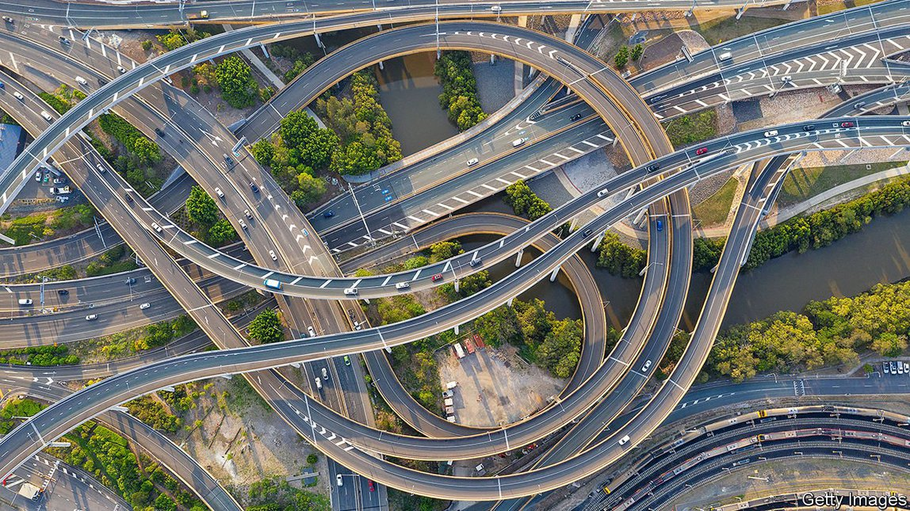

2021-05-31T13:06:04+00:00
工程学
用石头和绳子编一条路
更环保的筑路法

自从两千多年前罗马人开始气势恢宏地修建“条条大路”以来，筑路就一直是一项叫人汗流浃背、灰头土脸的工作，得要让大量的岩石和石块就位。到了近代，还要用沥青或混凝土覆盖路面。现在，一组瑞士研究人员认为他们找到了一个更优雅的解决方案。不过看起来可能很奇怪，因为用的是编织技术。
瑞士联邦材料科学与技术实验室（Swiss Federal Laboratories for Materials Science and Technology）的马丁·阿拉依噶达（Martin Arraigada）和赛义德·阿贝申（Saeed Abbasion）用一个机械臂把细绳编成一系列精心设计的形状，编织成形的过程中添加一层层石块并夯实。绳子缠绕住石块，把它们的位置固定下来。最终形成的结构坚固稳定得惊人。在一次实验中，用这种方法建造的一段路面承受了半吨的负荷。细绳缠绕着的石块几乎纹丝不动。
公路和人行道通常是用多层不同等级的沙子、碎石和石块筑成。这些材料铺好之后，再在表层铺上骨料，用水泥密封并粘合形成混凝土，或者与沥青混合制成柏油路。这两种方法对环境都有害。制造水泥的过程产生大量二氧化碳，而沥青这种类似焦油的粘性物质是从石油中提炼出来的。
编织筑路产生的排放较少。而且阿拉依噶达称用到的石块和细绳很容易回收。这个团队试过用各种材料制作细绳，最终选择了一种用聚酯（一种塑料）增强的再生纤维纱。聚酯不容易腐烂，也可以回收利用，不过团队还是希望能找到有同样功效的生物材料。
他们这种编织筑路法的灵感来自苏黎世联邦理工学院（ETH）的格拉玛奇奥·科勒（Gramazio Kohler）建筑研究小组的成果。在乔治纳·卢塞诺娃（Gergana Rusenova，如今在澳大利亚的斯威本科技大学）的带领下，那个团队的一个项目曾以类似的方式建造了一个有11根柱子的类似巨石阵的结构。一个履带式机器人按几何图案布下120公里的细绳，再放上30吨碎石。最后建成的3米高的石柱堆稳稳地撑起了9吨重的盖顶石。
不过，阿拉依噶达提醒道，在编织筑路法能用作商业方案之前，还有一段路要走。他和同事们正在测试各种装置，并在电脑上模拟用不同的编绳图案来固定石头。之后他们会做更多测试，包括测试行进中车辆的车轮产生的滚动压力。
混凝土和沥青路面通常都不透水，并被铺成能让雨水流向路边排水沟的形状。如果水留在路面的裂缝中，就会形成坑洼，尤其是当水结冰时还会膨胀，就会撑开路面产生更多的裂缝。用细绳捆绑骨料能形成可渗水的路面，可能会减少坑洼。这么做可能还有其他好处。比如研究人员认为，多孔的道路可以让水更容易下渗到路面下的底土，减少道路大面积覆盖土地对当地水文的影响。就和织一件漂亮的羊毛开衫一样，成功将从设计一个好花样开始。
2021-05-31T13:06:04+00:00
Engineering
Knitting a road with stones and string
Greener road-building
SINCE THE Romans began doing it with great panache more than 2,000 years ago, road-building has been a sweaty, grubby business, involving heaving great quantities of rocks and stones into place and, in more recent times, covering the surface with asphalt or concrete. Now a group of Swiss researchers think they have come up with a more elegant solution. Strange as it may seem, this involves knitting.
Martin Arraigada and Saeed Abbasion of the Swiss Federal Laboratories for Materials Science and Technology use a robotic arm to lay out string in a series of elaborate patterns. As the knitting takes shape, layers of stones are added and tamped down. The string entangles the stones, keeping them in place. The result is a structure that is surprisingly stable and strong. In one experiment a section of pavement put together in this way withstood a load of half a tonne. The encapsulated stones hardly moved at all.
Roads and pavements are usually made from layers of different grades of sand, gravel and stones. Once these are in place the surface is treated with an aggregate that is sealed and bound together with cement to form concrete, or mixed with bitumen to make asphalt. Neither method is environmentally friendly. Making cement produces huge amounts of carbon dioxide, while bitumen, a sticky tar-like substance, is obtained from oil.
Knitting roads creates fewer emissions. And the stones and string are easily recyclable, says Dr Arraigada. The group tried various materials for the string, settling eventually on recycled textiles reinforced with polyester, a type of plastic. Polyester resists rotting and can also be recycled, although the group hope to find biological materials which can do the same job.
They got the idea of knitting roads from work carried out by the Gramazio Kohler architectural research group at ETH, a university in Zurich. In one of this group’s projects, led by Gergana Rusenova, now at Swinburne University of Technology, in Australia, a Stonehenge-like structure with 11 columns was built in a similar way. A mobile robot, which moved on caterpillar tracks, laid down 120km of string in geometric patterns while 30 tonnes of crushed stones were added. The resulting three-metre-high columns comfortably supported a nine-tonne capping stone.
There is, though, some way to go before knitted roads become a commercial proposition, cautions Dr Arraigada. He and his colleagues are testing various set-ups and modelling on a computer how different patterns of string can be used to hold the stones. They will then carry out more tests—including ones that apply the sorts of rolling pressure generated by the wheels of moving vehicles.
Concrete and asphalt road surfaces are usually impervious to water, and are shaped so that rain flows off them into gutters running alongside. If water gets caught in surface cracks, it can cause potholes—especially if it freezes and thereby expands, opening up more cracks. Binding aggregates with string would produce a permeable road surface, which might result in fewer potholes. It might have other advantages, too. The researchers think, for example, that a porous road could help water reach the subsoil below, reducing the impact that covering so much land with roads has on local hydrology. Just like knitting a nice cardigan, success will depend on starting with a good pattern. ■
2021-05-31T13:06:04+00:00
工程學
用石頭和繩子編一條路
更環保的築路法
自從兩千多年前羅馬人開始氣勢恢宏地修建“條條大路”以來，築路就一直是一項叫人汗流浹背、灰頭土臉的工作，得要讓大量的岩石和石塊就位。到了近代，還要用瀝青或混凝土覆蓋路面。現在，一組瑞士研究人員認為他們找到了一個更優雅的解決方案。不過看起來可能很奇怪，因為用的是編織技術。
瑞士聯邦材料科學與技術實驗室（Swiss Federal Laboratories for Materials Science and Technology）的馬丁·阿拉依噶達（Martin Arraigada）和賽義德·阿貝申（Saeed Abbasion）用一個機械臂把細繩編成一系列精心設計的形狀，編織成形的過程中添加一層層石塊並夯實。繩子纏繞住石塊，把它們的位置固定下來。最終形成的結構堅固穩定得驚人。在一次實驗中，用這種方法建造的一段路面承受了半噸的負荷。細繩纏繞着的石塊幾乎紋絲不動。
公路和人行道通常是用多層不同等級的沙子、碎石和石塊築成。這些材料鋪好之後，再在表層鋪上骨料，用水泥密封並粘合形成混凝土，或者與瀝青混合製成柏油路。這兩種方法對環境都有害。製造水泥的過程產生大量二氧化碳，而瀝青這種類似焦油的粘性物質是從石油中提煉出來的。
編織築路產生的排放較少。而且阿拉依噶達稱用到的石塊和細繩很容易回收。這個團隊試過用各種材料製作細繩，最終選擇了一種用聚酯（一種塑料）增強的再生纖維紗。聚酯不容易腐爛，也可以回收利用，不過團隊還是希望能找到有同樣功效的生物材料。
他們這種編織築路法的靈感來自蘇黎世聯邦理工學院（ETH）的格拉瑪奇奧·科勒（Gramazio Kohler）建築研究小組的成果。在喬治納·盧塞諾娃（Gergana Rusenova，如今在澳大利亞的斯威本科技大學）的帶領下，那個團隊的一個項目曾以類似的方式建造了一個有11根柱子的類似巨石陣的結構。一個履帶式機器人按幾何圖案布下120公里的細繩，再放上30噸碎石。最後建成的3米高的石柱堆穩穩地撐起了9噸重的蓋頂石。
不過，阿拉依噶達提醒道，在編織築路法能用作商業方案之前，還有一段路要走。他和同事們正在測試各種裝置，並在電腦上模擬用不同的編繩圖案來固定石頭。之後他們會做更多測試，包括測試行進中車輛的車輪產生的滾動壓力。
混凝土和瀝青路面通常都不透水，並被鋪成能讓雨水流向路邊排水溝的形狀。如果水留在路面的裂縫中，就會形成坑窪，尤其是當水結冰時還會膨脹，就會撐開路面產生更多的裂縫。用細繩捆綁骨料能形成可滲水的路面，可能會減少坑窪。這麼做可能還有其他好處。比如研究人員認為，多孔的道路可以讓水更容易下滲到路面下的底土，減少道路大面積覆蓋土地對當地水文的影響。就和織一件漂亮的羊毛開衫一樣，成功將從設計一個好花樣開始。